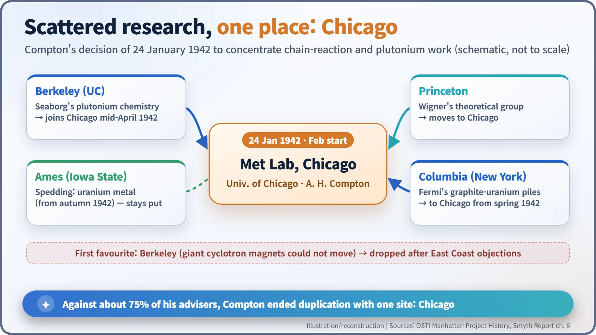
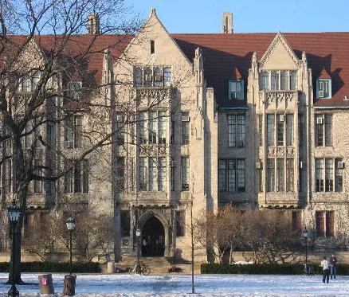
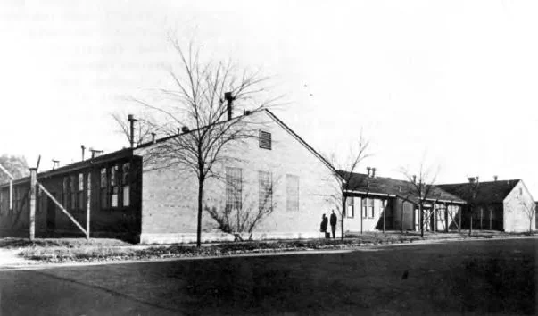
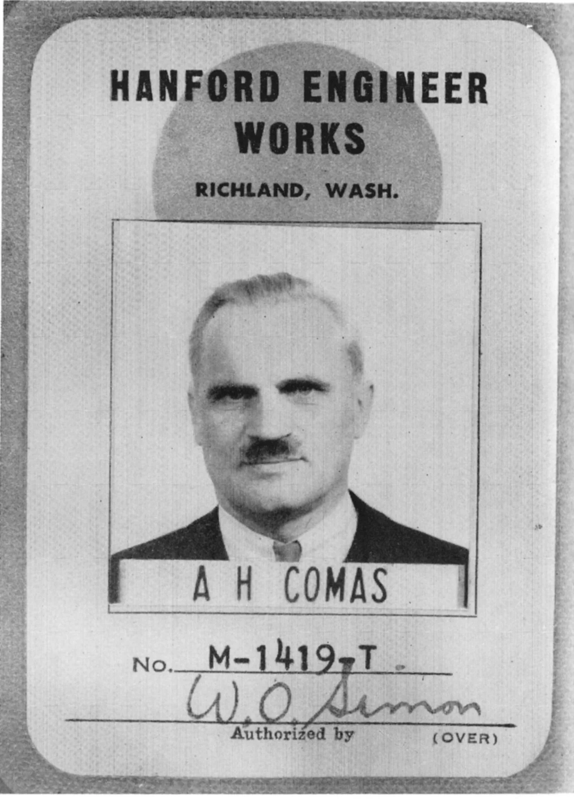
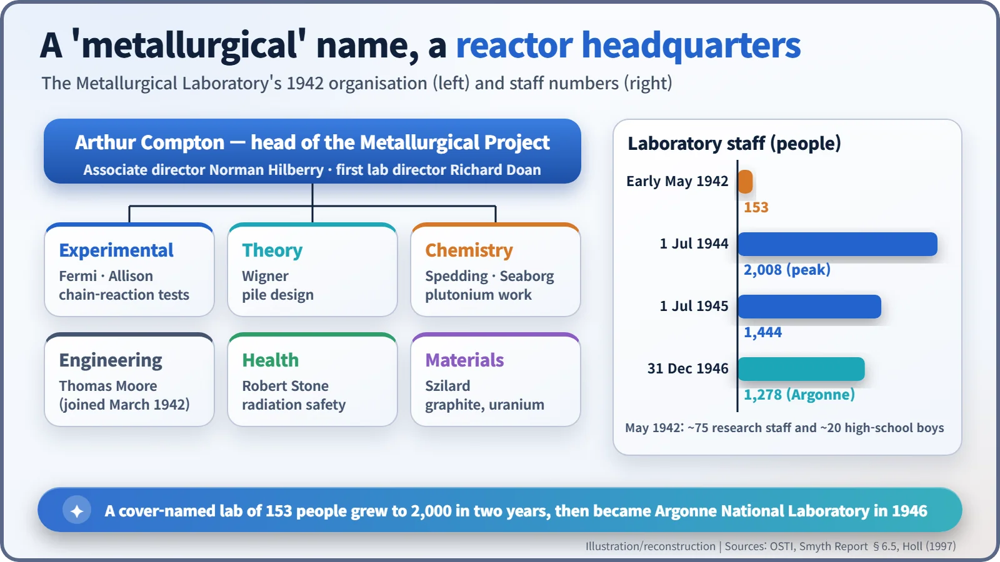

Nuclear History · 086
A "Metallurgical" Lab That Built Reactors — The Birth of Chicago's Met Lab (1942)
On 24 January 1942 Arthur Compton overruled most of his advisers and gathered the chain-reaction work in Chicago, behind a deliberately misleading name.
In January 1942 Arthur Compton pulled America's scattered chain-reaction and plutonium research into one place: the University of Chicago. To hide what it did, the new outfit was called the Metallurgical Laboratory. Within a year it had built the first nuclear reactor, and in 1946 it became Argonne National Laboratory.
What if it had been Berkeley?
What if the world's first nuclear reactor had been built in Berkeley, California, rather than in Chicago? It is not an idle question. In January 1942, when American scientists debated where to gather their chain-reaction research, Berkeley was the early favourite. The man who changed the plan was the University of Chicago physicist Arthur H. Compton (1892–1962), and the result was a laboratory with a deliberately misleading name: the Metallurgical Laboratory. [1]
Pieces of a puzzle, scattered across a continent
In December 1941, just after the attack on Pearl Harbor, the American atomic research effort was reorganised. Vannevar Bush named three program chiefs: Harold Urey, Ernest Lawrence and Compton, who had won the 1927 Nobel Prize in Physics. Compton's share was the uranium chain reaction and the production of plutonium. The trouble was that the people doing this work were spread across the country. Enrico Fermi was stacking graphite and uranium at Columbia University in New York, Eugene Wigner was doing the theory at Princeton, and Glenn Seaborg was working on plutonium chemistry at Berkeley. [1] [5]
Compton believed that so many separate groups meant too much duplicated effort. His timetable left no room for waste: a controlled chain reaction by January 1943 and a bomb by January 1945. [4]
The science behind the hurry was simple to state and hard to prove. When a uranium-235 nucleus splits, it releases a couple of fresh neutrons; if, on average, at least one of them goes on to split another nucleus, the reaction keeps itself going. Natural uranium in a block of graphite might just manage that, and a working "pile" would also turn some uranium-238 into plutonium, a second possible bomb material. Nobody had yet shown that the numbers really added up.
Berkeley or Chicago?
At first Compton agreed with Lawrence that Berkeley was the best site, largely because Lawrence's giant cyclotron magnets could not be moved. But scientists and administrators on the East Coast refused to see the work centralised in California. On 24 January 1942, Compton decided to bring the Princeton and Columbia groups to his own campus, the University of Chicago. [1]
It was not a popular call. Compton later said he went against the advice of "75 percent of his advisors", because he "felt greater confidence" that he could "see the job through at Chicago better than at any alternative site." The university backed him wholeheartedly. Its vice-president, E. T. Filbey, is reported to have told him: "We will turn the University inside out if necessary to help win the war." [1]
There is also a famous wager from these days. According to a story that goes back to Compton's own recollections, Lawrence bet him $1,000 that Chicago would not have a reactor running by the end of the year. Compton accepted, and Lawrence lowered the stakes to a five-cent cigar.

A cover name on the door
The organisation took shape in the last days of January, and the laboratory was up and running in February. It was called the Metallurgical Laboratory, or Met Lab for short, a code name meant to hide the fact that it worked on uranium. That does not mean there was no metallurgy at all. Real metal work was part of the project: from the autumn of 1942, Frank Spedding's team at Iowa State College in Ames produced uranium metal for reactors. [1] [3] [4]
The first laboratory director was Richard L. Doan, while Fermi, Samuel Allison and Wigner coordinated the research, experimental and theoretical work on the chain reaction. Thomas Moore arrived in March 1942 to head engineering, and Robert S. Stone led a Health Division to protect workers from radiation. In other words, keeping people safe was planned in from the very start. Leo Szilard took charge of acquiring materials such as graphite and uranium, and Seaborg, who arrived from Berkeley in mid-April, led the plutonium separation work. The university handled the money and paperwork; Compton ran the science. [1] [2] [3]

From twenty schoolboys to two thousand staff
In early May 1942 the laboratory had 153 people, including about 75 research associates and assistants, and about 20 high-school boys. The offices were in Eckhart Hall, the physicists worked under the stands of the Stagg Field stadium, and the chemists moved into a New Chemistry Building put up on old tennis courts and completed in December 1942. [1]

Bigger, and more secret
The wider Metallurgical Project, counting partner universities and companies, eventually involved more than 5,000 people in some 70 research groups. In Chicago itself, staff numbers peaked at 2,008 on 1 July 1944, and an experimental site was set up in the Argonne Forest southwest of the city. From the second half of 1942 the whole effort came under the US Army's Manhattan Engineer District, and security tightened. By 1944 Compton's badge for the Hanford site carried an alias: "A H COMAS". [4]


What the cover name left behind
Concentration paid off. On 2 December 1942, under the stands of Stagg Field, the first self-sustaining nuclear chain reaction took place, and Compton won his bet. Seaborg's group's work on separating plutonium became the basis for large-scale production plants. In 1945, scientists at the laboratory also raised questions about how an atomic bomb should be used. [2]
After the war, on 1 July 1946, the Metallurgical Laboratory became Argonne National Laboratory, the first US national laboratory. Behind a name chosen to keep a secret, a lasting model for big, government-funded research was born. [4] [6]